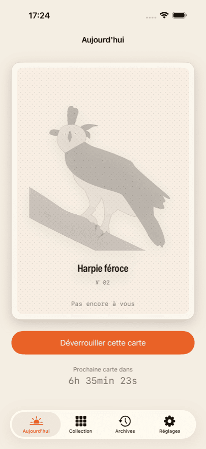
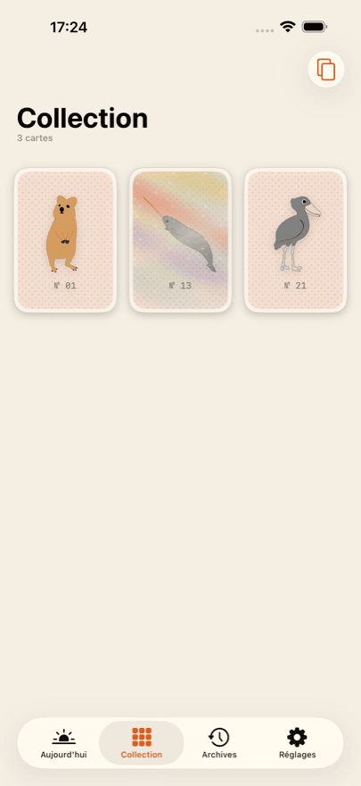
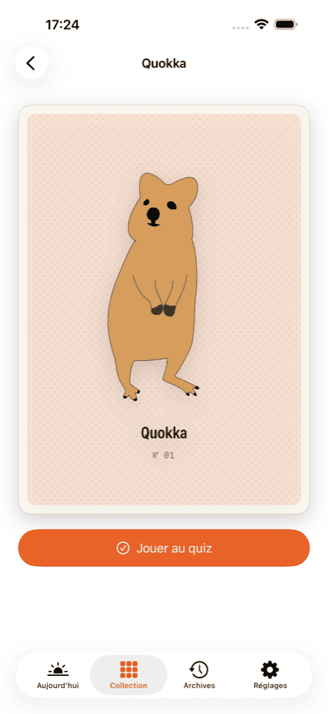
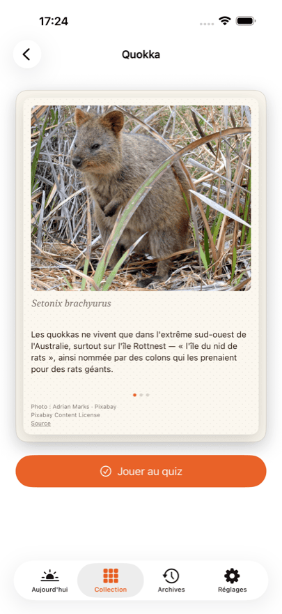
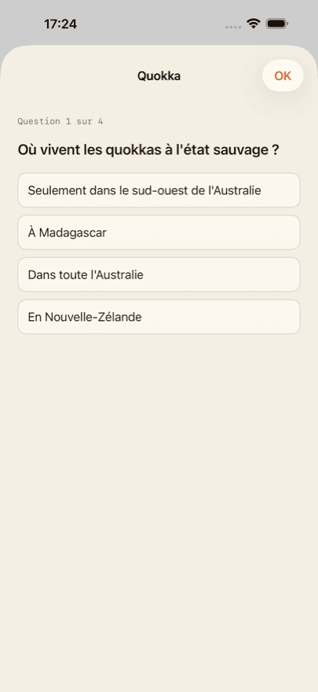

App pour iPhone
Daily Bestiary
Cartes animalières à collectionner
Chaque jour, une nouvelle carte animalière dessinée à la main vous attend. Débloquez-la et elle est à vous : au dos, une photographie, trois faits, le nom scientifique et un quiz de quatre questions.
Vos trois premières cartes sont offertes. L’une d’elles est une carte holographique — inclinez votre téléphone et le reflet la traverse.
Daily Bestiary arrive très bientôt sur l’App Store. Dès sa publication, ce bouton mènera directement à la fiche.
Ce que vous obtenez
-
Une carte par jour
Une seule, jamais plus. La carte du jour est calculée à partir de votre propre date de début, et non d’une date du calendrier — vous commencez quand vous voulez.
-
Une photo et trois faits
Chaque dos porte une photographie réelle de l’animal, trois faits et le nom scientifique.
-
Un quiz par animal
Quatre questions pour chaque animal, relues par un professeur de biologie. On peut toujours rejouer.
-
Une collection qui grandit
L’album ne montre que vos propres cartes. Pas d’emplacements vides, pas de « x sur y », pas de course.
-
Cartes holographiques
Certaines cartes brillent : inclinez votre téléphone et la lumière parcourt la surface.
À quoi cela ressemble





Collector
Collector ouvre les archives : un jour manqué peut encore être récupéré. La carte du jour est incluse chaque jour, et vous obtenez vos statistiques de quiz sur toute la collection.
Collector est un abonnement qui se renouvelle jusqu’à sa résiliation. Vous pouvez résilier à tout moment dans les réglages de votre compte Apple. Les tarifs et durées en vigueur sont indiqués dans l’App Store, car ils varient selon les pays.
Pas de compte, pas de fil, pas de publicité
Il n’y a ni inscription ni connexion. Votre collection reste sur votre appareil et — si vous êtes connecté à iCloud — se synchronise en privé entre vos propres appareils. L’éditeur de cette app n’y a aucun accès.
Rien à faire défiler, rien à farmer. Pas de publicité, pas de régies publicitaires, aucun suivi d’une app à l’autre. Les achats passent par un prestataire ; la politique de confidentialité précise exactement ce qui lui est transmis.
Crédits photo
Les dessins au recto des cartes ont été réalisés à la main. Les photographies au dos proviennent de sources libres — Pixabay, Unsplash et Wikimedia Commons.
Chaque photographie est créditée au dos de sa propre carte, avec l’auteur, la licence et un lien vers la source. Pas en petits caractères, mais là où se trouve l’image.
Questions fréquentes
Combien coûte Daily Bestiary ?
Le téléchargement est gratuit, et les trois premières cartes sont offertes — avec le dos, les faits et le quiz. Ensuite, vous débloquez la carte du jour à l’unité, achetez un lot de dix, ou vous abonnez à Collector. Les tarifs en vigueur figurent dans l’App Store ; ils varient selon les pays.
Faut-il un compte ?
Non. Aucune inscription, aucune connexion, aucun profil. L’app ne demande ni nom ni adresse e-mail.
Combien y a-t-il de cartes au total ?
Ce n’est indiqué nulle part — ni dans l’app, ni ici. Un total transforme la collection en barre de progression, et c’est précisément ce que nous ne voulons pas. Quand vous aurez toutes les cartes existantes, l’app vous le dira.
Que se passe-t-il si je manque un jour ?
Cette carte n’est pas perdue. Collector ouvre les archives, où les jours manqués peuvent être récupérés. Sans Collector, le lendemain apporte simplement la carte suivante.
Ma collection se synchronise-t-elle entre iPhone et iPad ?
Oui, à condition que les deux appareils soient connectés à iCloud avec le même compte Apple. La synchronisation passe par votre base iCloud privée, que l’éditeur ne peut pas consulter.
J’ai réinstallé l’app — mes achats sont-ils perdus ?
Non. Dans les réglages de l’app et sur chaque écran d’achat, il y a « Restaurer les achats ». Cela rattache votre abonnement et votre crédit restant à votre compte Apple. La collection elle-même revient par iCloud.
Comment résilier Collector ?
Par Apple, et non par l’app : Réglages → votre nom → Abonnements. La résiliation y est possible à tout moment, avec effet à la fin de la période en cours. L’app propose le même chemin via le Customer Center dans ses réglages.
L’app fonctionne-t-elle sans connexion Internet ?
Oui. Toutes les cartes, photographies et questions de quiz sont contenues dans l’app et ne sont jamais téléchargées. Une connexion n’est nécessaire que pour les achats et la synchronisation iCloud.